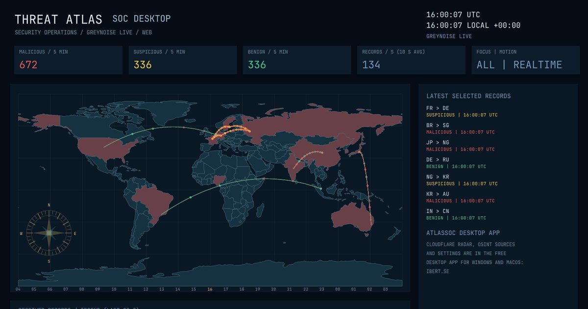

What the live threat map shows
AtlasSOC turns the public GreyNoise threat-map feed into a security operations centre (SOC) style wall display. Each record that arrives is drawn as an arc from its source country to its destination country and coloured by the GreyNoise classification: malicious, suspicious or benign. Countries are tinted by their most common class over the last five minutes.
- Counters for malicious, suspicious and benign records over the last five minutes.
- Received records per second, as a rolling 90-second chart.
- A list of the latest records with source, destination and time.
- UTC and your local time, with an hour strip under the map.
The counts are records received from the feed, not unique attacks or unique attackers.
How it works
The page loads a small WebAssembly module built from the same Rust code as the desktop app. Only when you press Start live view does your browser open a WebSocket to GreyNoise; the module keeps the feed state and draws each frame, which the page copies to the screen. The map adapts to your screen: wide screens get an extra top-countries column, and the picture is drawn for your display's pixel density.
AtlasSOC desktop app and screensaver
The free desktop app for Windows and macOS adds Cloudflare Radar aggregates, OSINT sources and settings, and Threat Atlas also runs as a screensaver. Downloads, release notes and the full source code are on GitHub.
Privacy
No cookies, no analytics and no tracking. The page itself sends nothing; the only outside connection is the one your browser makes to GreyNoise after you start the live view. See the privacy notice.